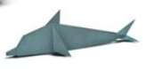
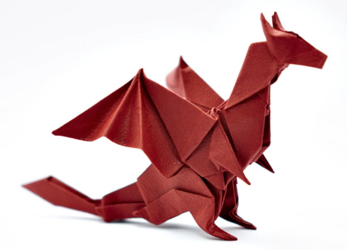
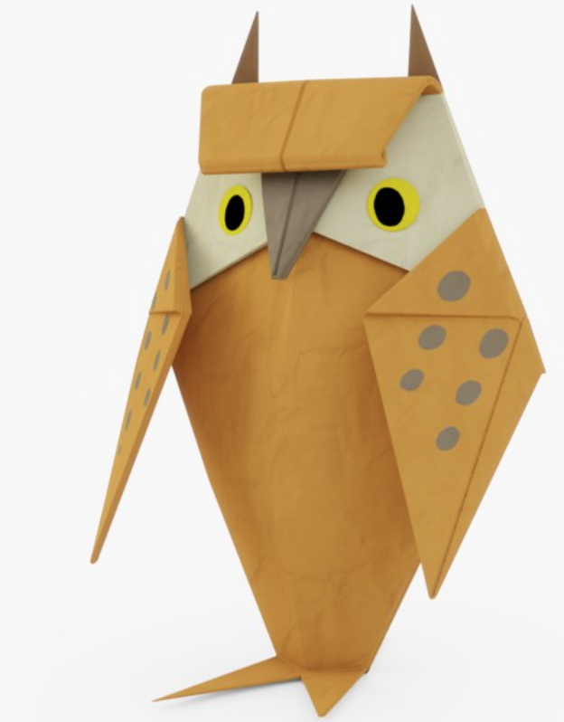
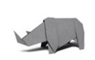

Origami Designs
About Us
Follow Us

Interesting Facts about Dolphins
- Dolphins have 2 stomachs
- Dolphins can live up to 50 years
- There are around 40 species of dolphins

Interesting Facts about Dragons
- The name "dragon" is derived from the Latin word 'draconem' which means 'huge serpent'
- Most dragons have four legs, a scaly body, and wings
- The earliest known depiction of a dragon is a stylised C-shaped representation carved in jade
Interesting Facts about Lions
- Lions are the only cats that live in groups
- A group, or pride, can be up to 30 lions, depending on how much food and water is available
- A lion's roar can be heard up to eight kilometres away

Interesting Facts about Owls
- Owls can rotate their necks 270 degrees
- A group of owls is called a parliament
- The tiniest owl in the world is the Elf Owl, which is 5 - 6 inches tall and weighs about 1 ½ ounces

Interesting Facts about Rhinos
- There are 5 species of rhino
- Rhinos have poor eyesight
- Rhino horns are made up of the same thing as human fingenails